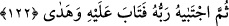

Ca’fer (Sâdık) şöyle demiştir: “O (Hz. Âdem), cennetleri ve nimetlerini
gördü/inceledi, kıyamete kadar o “Âdem Rabbine âsî oldu” diye anılacaktır. Eğer
cennetleri ve nimetlerini kalbiyle görüp inceleseydi, sonsuza kadar hicranla anılacaktı.”
et-Te’vîlâtü’n-Necmiyye’de şöyle der: “Muhabbetini nefsinin şehvetlerini taleb
konusunda sarf ederek “Âdem Rabbine âsî oldu” ve fenâ fillah’ı ebedîlik ve cennette
ebedî hükümranlık talebinde sarf ederek “yolunu şaşırdı.”
Mesnevî’de der ki:
Hakk’ı tevhid etmeyi öğrenmek nedir?
Kendini Vahid’in/Bir’in önünde yakıp yok etmektir.
Eğer gündüz gibi aydınlanmak, parlamak istiyorsan,
Gece gibi karanlık olan varlığını, benliğini yak.
Varlığını o varlığı meydana getirenin varlığında erit
Bakırı kimya içinde eritir, yok eder gibi erit (de altın ol)
İbn Atâ’ya Hz. Âdem’in kıssası ve Allah Teâlâ’nın bir tek hatâsı sebebiyle ona nidâ
ettiği, zürriyetinin pek çok günahlarını örttüğü soruldu. O şöyle cevap verdi: Âdem
(a.s.)’ın günahı Allâh’a kurbiyet makamında Hakk’ın civarında sâdır olmuştur. Onun
zürriyetinin günahları ise mihnet yurdu olan dünyada meydana gelmektedir. Bu sebeple
Âdem (a.s.)’ın zellesi, zürriyetinin günahlarından daha büyüktür.”
122. Sonra Rabbi onu seçkin kıldı; tevbesini kabul etti ve doğru yola yöneltti.
“Sonra Rabbi onu seçkin kıldı;” Tevbeye yöneltmek ve muvaffak kılarak onu seçti ve
kendine yaklaştırdı. “Tevbesini kabul etti.” zevcesi Havva ile birlikte “Rabb’imiz, biz
kendimize zulmettik, eğer bizi bağışlamaz ve bize acımazsan, muhakkak ziyana
uğrayanlardan oluruz!” (el-A‘râf 7/23) diye yalvardıkları vakit tevbelerini kabul etti.
“Ve” onları “doğru yola yöneltti.” Tevbe ettiğinde kararlı olmaya ve günahlardan
korunmanın sebeplerine sımsıkı sarılmaya muvaffak kıldı.
Burada işâret vardır ki eğer Allah onu kendi nefsine ve yaratılışındaki sevk-i tabîîye
bıraksaydı, kendi burhanı ile tevbe edip Allâh’a dönmezdi. Fakat Allah fazlı ve
keremiyle onu seçti. İnâyetinin cezbesiyle onu örttü, rubûbiyet makamına hidâyet etti.
Bir hadiste şöyle buyrulmuştur: “Bütün dünya halkının ağlayışı bir yana, Dâvud
(a.s.)’ın ağlaması bir yana toplansa; muhakkak onunki fazla gelirdi. Bunlar bir araya
getirilse, Nuh (a.s.)’ın ağlayışı bunlardan çok olurdu.” Nuh (a.s.), kendisi için çok
ağladığından ötürü ‘Nûh’ adını almıştır. “Şayet bütün bunlar bir araya getirilse, Hz.
Âdem’in hatâsına ağlaması daha çok olurdu.”[111]